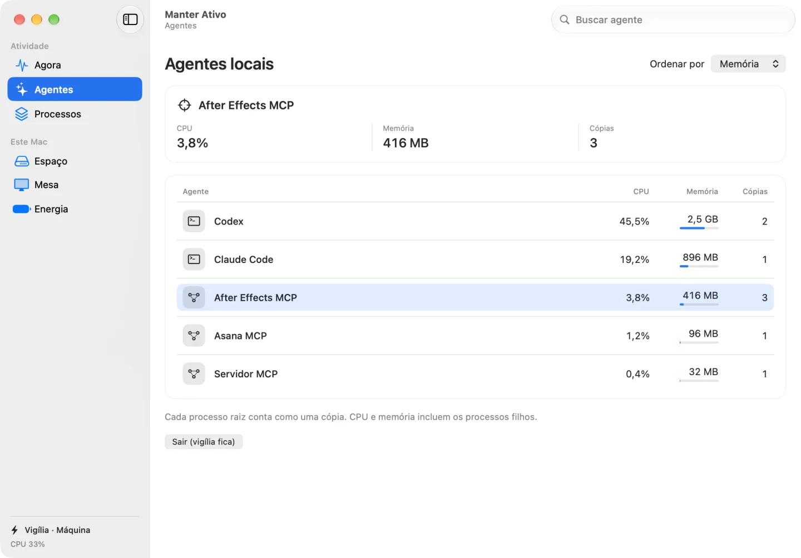

Quais agentes estão usando o seu Mac?
Veja quanto de CPU e memória o Claude Code, o Codex e os servidores MCP locais consomem. Acompanhe pela barra de menus e mantenha o Mac acordado enquanto eles trabalham.
macOS 15+ · Apple Silicon e Intel
Beta técnica. O Gatekeeper pode bloquear a abertura. Sobre a instalação
Descrição do vídeo
A demonstração abre em Agora. O Codex usa 2,5 GB e a vigília de máquina está ativa. Em Agentes, a seleção do After Effects MCP mostra o uso de CPU, a memória e os três processos raiz.
Da barra de menus ao agente.
Comece pelos três agentes que mais usam memória. Abra a lista completa para encontrar o processo que você quer acompanhar.

- Compare os agentes locais
- Busque por nome ou ordene por CPU, memória ou cópias. Cada processo raiz conta como uma cópia. Os filhos entram no consumo do grupo.
- Escolha o que fica acordado
- Mantenha a tela acesa ou impeça o repouso do sistema. Um agente do macOS mantém a vigília mesmo depois que você fecha o painel.
- Mantenha os dados no seu Mac
- A leitura dos processos é local, sem conta nem telemetria. Abas de navegador e agentes que rodam só na nuvem ficam fora da medição.
Instale a beta técnica.
Requer macOS 15 ou posterior. O app compilado dispensa Xcode. A interface é em português brasileiro.
Baixar a Beta 1- Baixe o ZIP universal para macOS e descompacte o arquivo.
- Arraste Manter Ativo.app para Aplicativos.
- Abra o app no Finder. Para voltar ao painel, escolha “Abrir painel” na barra de menus.